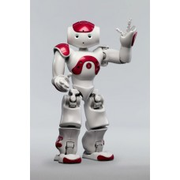
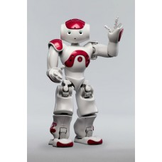

BUHAR KAZANLI UTU
PHILIPS GC9650 ELITE BUHAR KAZANLI UTU
PHILIPS GC9650 ELITE BUHAR KAZANLI UTU

Agirlik 5,1 kg GARANTI SÜRESI 2 Yil
MARKA PHILIPS MODEL GC9650
ÜRÜN BUHAR GÜÇ 2400 W
BUHAR ÇIKISI GR/DK 140 gr DIKEY ÜTÜLEME Var
SU HAZNESI HACMI 1,8 lt TABAN TIPI T-ionicGlide
Kablo Uzunlugu 1,8 m SOK BUHAR GR/DK Var
Buhar Kazani Var Kullanim Tipi Buhar Kazanli
Otomatik Kapanma Özelligi Var
Ürün MenseiIthal
GARANTI SÜRESI 2 Yil
MODEL GC9650
GÜÇ 2400 W
TABAN TIPI T-ionicGlide
SOK BUHAR GR/DK Var
Kullanim Tipi Buhar Kazanli
simdi efendim bir bildiginiz gibi normal ütüler var, içine su konuluyor ve o suyu ister önden fiskirtiyorsun,
ister alttan buhar yapip veriyorsun falan. bu buhar kazanlilarda suyu kazana koyuyorsun. kazanda elde edilen buhar da ütüye ulastiriliyor.
peki nedir farki? valla esim diyor ki çok daha kolay ütü yapiliyormus bu kazanlilarla. ütüye su koymadigimiz
için ütünün tabaninda veya kendisinde kireçlenme gibi bir sorun da olusmuyor. kireçlenirse kazan kireçlenir,
o da suyu biraz daha geç isitir. zaten artik kazanlari da kireç tutmayan malzemelerden üretiyorlar veya kireç tutucu çubuklardan
koyuyorlar kazanlara. tabi buhar basinci falan klasik ütülere göre çok yüksek bu ütülerin, bunu da unutmamak gerek.
alirken dikkat edilmesi gereken en önemli sey ise sürekli su doldurabilme özelligi. sürekli su doldurma varsa kazanin kaç litre
oldugunun falan da bir önemi kalmiyor. bittikçe doldur babam doldur. biz ilk bunlardan alirken bu özellige dikkat etmedik ve 3-4 ay sonra o ütüyü
okutup sürekli doldurulabilirlerden aldik. onun disinda seviye tespit hunisi falan fasa fiso, gereksiz.
buhar kazanli ütü tasinabilirlik açisindan biraz hantal, fakat basarili bir üründür.
devamini okuyayim...
03.01.2011 11:53 konstantinoux
siemens ts22extrem diye bir modelini bugün kullanip çok memnun kaldigim ütü. 15 gömlek, 1 pantolon ütülemisim,
daha yorulmadim bile. dügmesine bastikça 5,5 bar basinçli buhari boca ediyor, kumas dümdüz oluveriyor. siz istemediginizde buhar vermiyor.
zaten buharli ütülemenin kurali söyleymis: önce buharlayacaksin, kumas nemlenecek. sonra ütünün arka tarafindaki deliksiz kisim üzerinden geçerken orasi
nemi kurutup kumasi sabitleyecek. profesyonel ütücü isi gibi oluyor valla.
mükemmel bir olaymis. bunca yildir almadigima pisman oldum.
16.11.2013 22:52 generalduncan
philips gc8622/20 diye bir modelin siparisini verip kullandigim ve asiri memnuniyet duydugum ütü modeli. bu tarz ütülerde dikkat edilecek
iki ana özellik bulunuyor. birincisi ütünün bar cinsinden buhar basinci. ne kadar yüksek olursa o kadar kuvvetli bir buhar gücü elde ediliyor ve
kirisiklarla mücadele o kadar azaliyor. ikincisi sürekli su ekleme özelligi. kaldi ki eger orta çapta bir isletmede (lokanta, kuru temizleme)
ütü yapmayacaksaniz 2,5 litre su haznesi ile iki saate kadar sürekli buhar elde edebiliyorsunuz. buna ek olarak bu ütüde akilli çip teknolojisi var.
ne ise yarar bu der gibi baktiniz... efendim bu özellik kumasin cinsine göre isi ayarini degistirmeden ütü yapmaniza olanak veriyor.
bu sayede keten bir gömlekten sonra o gömlegin üzerine giyebileceginiz ipek salinizi hiç bir ayar gerektirmeden ütüleyebilirsiniz.
evet biraz hantal, bu kismina katilmamak elde degil. klasik bir ütüyü saklamak ve muhafaza etmek daha kolay. fakat yaklasik 8 gömlek,
20 civari pantolon, 3 masa örtüsü toplamda yarim saat kadar sürdü. en yakindaki marangoza gidip alacaginiz 50cmx50cmx50cm dekoratif
sandikla sanirim bu sorunu da halletmis olursunuz.
devamini okuyayim...
30.04.2015 12:18 bu tabanca bu cakmak
tefal'in buhar kazanli bir modeline sahibim. basta kazan kismi kocaman oldugu icin gozumu rahatsiz ediyordu ancak kullandikca anladim ki
onemli olan boyu degil islevi. gomlek utulemekten nefret eden ben, kisa surede aldigim jilet gibi sonuclarla bu isi de sevmeye basladigimi
fark ettim. parca basi iki dakikada utu yapmak hic de kulfet degil. biraz gec isindigi icin utuyu genelde sadece bir tisort icin calistirmiyorum,
acmisken aradan ciksin diye 4-5 bir sey utuluyorum. ne oldugunu anlamadan utulenecek kiyafet yigini da ortadan